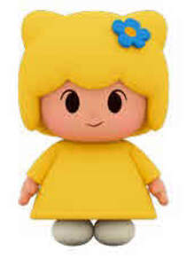

Trade Mark Journal No.2026/009 27 February 2026
UK00004311109 16 December 2025 (16,25,28)

- Class 16
- Paper and cardboard; printed matter; bookbinding material; photographs; stationery and office requisites, except furniture; adhesives for stationery or household purposes; drawing materials and materials for artists; paintbrushes; instructional and teaching materials; plastic sheets, films and bags for wrapping and packaging; printers' type, printing blocks; cartoon prints; cartoon strips; story books; colouring books; children's comics; children's storybooks; painting books; printed books; poster books; fiction books; educational books; picture books; drawing books; books for children; sticker activity books; pop-up books; children's activity books; series of fiction books; books featuring fictional stories; children's books incorporating an audio component; stationery; printed stationery; paper stationery; stationery and educational supplies; greeting cards; birthday cards; blank cards; postcards; stationery; writing paper; envelopes; notebooks; memo pads; diaries, note cards; greeting cards; trading cards; diaries; stickers [stationery]; pencils; pen and pencil cases; pens; colouring pens; colouring crayons; colouring pencils; chalk; rulers; erasers; charts, wall charts; gift bags; paper bags; adhesive wall decorations of paper; tissues; paper party decorations; party invitations; paper party bags; paper party decorations; modelling clay for children; drawing pads; note pads; writing pads; stencils [stationery]; gift stationery; magazines; magazine supplements for newspapers; printed teaching activity guides; plastic gift wrap; advertising posters; advertising publications; printed invitations; printed stationery; printed matter; printed cartoon strips; arts and crafts paint kits; baby books; baby storybooks; baby memory books; paper baby bibs; school supplies, namely, arts and craft paint kits, chalk, crayons, drawing rulers, dry erase writing boards and writing surfaces, erasers, globes, modelling clay, protractors for use as drawing instruments; memo pads; paperweights; pen or pencil holders; pencil sharpeners; pen and pencil cases and boxes; rubber stamps; writing instruments; folders being stationery; collectible printed trading cards; printed bookmarks; printed calendars; printed Christmas cards; printed decals; printed flash cards; wrapping paper; paper cake decorations; paper napkins; paper party bags; paper party decorations, namely, paper napkins, paper place mats, crepe paper, invitations, paper table cloths and paper cake decorations; paper pennants; paper place mats; plastic party bags; temporary tattoo transfers; bath crayons; paints for use in the bath; body decals; parts and fittings for all the aforesaid goods.
- Class 25
- Clothing, footwear, headwear; outer-clothing; underclothing; belts [clothing]; casual wear; leisure wear; exercise wear; sportswear; beach wear; swim wear; ski wear; rain wear; sleepwear; underwear; baby wear; baby sleepwear; infant wear; infant sleepwear; fancy dress costumes; Halloween costumes; t-shirts; sweatshirts; socks; hosiery; headgear; neckwear; scarves; pashminas; capes; gloves; mittens; fancy dress costumes; children's clothing; children's footwear; swim wear for children; children's outerclothing; trousers for children; children's headwear; pyjamas; bibs, not of paper; cloth bibs; plastic baby bibs; baby pants; baby sandals; baby shoes; baby boots; baby bottoms; baby tops; baby bodysuits; baby clothes; baby doll pyjamas; knitted baby shoes; baby layettes for clothing; bootees (woollen baby shoes); baby bibs, not of paper; aprons; costumes for use in role-playing games; ear muffs; wrist bands; socks; robes; parts and fittings for all the aforesaid goods.
- Class 28
- Games, toys and playthings; video game apparatus; gymnastic and sporting articles; decorations for Christmas trees; action figures; bathtub toys; kites, toy building blocks; board games; costume masks; hand-held unit for playing electronic games other than those adapted for use with an external display screen or monitor; diecast miniature toy vehicles; dolls; doll accessories; doll clothing; bean bag dolls; bendable play figures; flying discs; inflatable vinyl play figures; jigsaw puzzles; marbles; plush toys; puppets; ride-on toys; skateboards; balloons; rollerskates; toy banks; water squirting toys; stuffed toys; toy vehicles; costumes being children's playthings; festive decorations, party novelties and artificial Christmas trees; Christmas tree ornaments; party favors in the nature of small toys; pinball machines and model craft kits of toy figures; and playing cards; confetti; paper face masks; children's riding vehicles [playthings]; skateboards; ice skates; balls, namely, playground balls, soccer balls, baseballs, basketballs; baseball gloves; swimming equipment; swimming floats for recreational use; kickboard flotation devices for recreational use; surfboards; swim boards for recreational use; swim fins; swimming flippers; play swimming pools; toys for use in swimming pools; arm floats for swimming; flotation apparatus for swimming; toy bakeware and toy cookware; toy sets; toy banks; toy snow globes; paper party favors; paper party hats; masquerade and Halloween masks; streamers (party novelties); party hats; rattles; toy telephones; play tents; roundabouts being playthings; slides; scale train sets; tricycles (toys); sleighs (games); play apparatus for use in children's nurseries; children's toy bicycles other than for transport; toy musical instruments; play tunnels; remote-controlled vehicles; toy mobiles; crib toys; crib mobiles; piñatas; roller skates; parts and fittings of the aforesaid goods.
ANIMAJ INVESTMENT SPV SAS
Representative: Stobbs